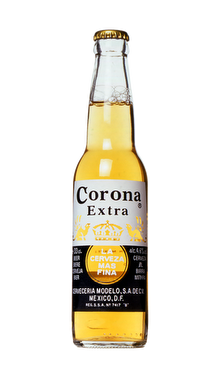
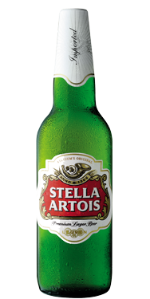
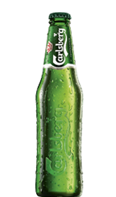
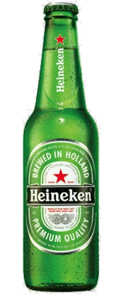

| Beer Image | Name | Description | Price |
|---|---|---|---|
 |
Corona Extra | Corona Extra is a pale lager produced by Cerveceria Modelo in Mexico for domestic distribution and export to all other countries besides the United States | $1.90 |
 |
Stella Artois | Stella Artois is a Belgian pilsner of between 4.8 and 5.2% ABV which was first brewed by Brouwerij Artois (the Artois Brewery) in Leuven, Belgium, in 1926. Since 2008, a 4% ABV version is also sold in Britain, Ireland, Canada and New Zealand. | $1.80 |
 |
Carlsberg | Carlsberg is a global brewer. Founded in 1847 by J. C. Jacobsen, the company's headquarters is located in Copenhagen, Denmark. Since Jacobsen's death in 1887, the majority owner of the company has been the Carlsberg Foundation. The company's flagship brand is Carlsberg (named after Jacobsen's son Carl). | $2.30 |
 |
Heineken | Heineken Lager Beer, or simply Heineken is a pale lager beer with 5% alcohol by volume, produced by the Dutch brewing company Heineken International. Heineken is well known for its signature green bottle and red star | $2.50 |